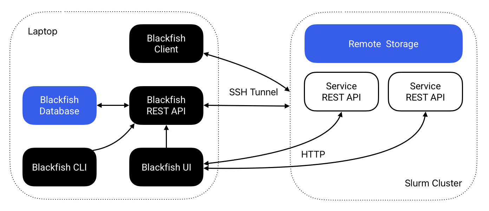

Management Guide
This guide explains how to perform tasks to ensure that Blackfish has access to everything it needs in order to run services. If you are using Blackfish OnDemand, these steps have already been taken care of by your system admin.
If you are a system admin, or you do not have access to Blackfish OnDemand, these notes are for you.
Architecture Overview
Blackfish consists of four components: a core REST API, a command-line interface (CLI), a browser-based user interface (UI), and a Python API. The core REST API performs all key service management operations while the Blackfish CLI and UI provide convenient methods for interacting with the Blackfish API. The Python API allows researchers to use Blackfish within Python scripts and pipelines.

Figure 1 The Blackfish architecture for running remote services on a Slurm cluster.
The Blackfish REST API automates the process of hosting AI models as APIs. Users instruct the Blackfish API via the CLI or UI to deploy a model and the REST API creates a "service API" running that model. The researcher that starts a service "owns" that service and can secure it with an API key. Blackfish tracks service status and provides methods to stop and delete services when they are no longer needed.
In general, service APIs do not run on the same machine as the Blackfish application. Researchers can run the Blackfish API on their local laptop or on an HPC login node. When a researcher requests a model, they must specify a host for the service. The service API runs on the specified host and Blackfish ensures that it is able to communicate with the possibly remote service API. Typically, users will run services on high-performance GPUs available on an HPC cluster with a Slurm job scheduler.
Note
Blackfish doesn't synchronize application data across machines. Services started from your laptop will not appear when running blackfish ls on the cluster, and vice versa.
Application Data
Blackfish stores data in several different locations:
- Core application data is stored in
BLACKFISH_HOME_DIRon the system where Blackfish is running (~/.blackfishby default). Core application data includes profile configuration, application logs, and database storage. - Models and images are stored in the user-defined locations
home_dirandcache_dir. These are profile-specific locations that need not reside on the machine where Blackfish is running.home_diralso stores job files created each time a service launches.
Let's consider what happens when a user launches a service from their laptop targeting a remote HPC cluster (Figure 1). The user will specify a profile that tells Blackfish the host and user of the targeted cluster. Blackfish uses this information to look for the required model and image files in both home_dir and cache_dir—also specified by the profile—on the cluster. If the required files exist, Blackfish creates a Slurm job script, stores it in $BLACKFISH_HOME_DIR/jobs/$service_id, and copies that job script to $home_dir/jobs/$service_id on the remote cluster. Finally, Blackfish remotely submits the Slurm job and stores its log files to $home_dir/jobs/$service_id.
Images
Blackfish does not ship with the container images required to run services. These images should be downloaded before running services1. The current required images are:
- Text generation:
vllm/vllm-openai:v0.10.2 - Speech recognition:
princeton-ddss/speech-recognition-inference:0.1.2
These images are expected to change over time, so be sure to check release notes for updates.
Obtaining Images
Services deployed on HPC systems require Apptainer, which uses Single Image Format (SIF) images instead of Docker's OCI format. Docker images must be converted to SIF files before Blackfish can use them. For most images—including those hosted on the GitHub container registry—running apptainer pull will do this automatically. For example,
This command generates a file speech-recognition-inference_0.1.2.sif in the directory where it is run. Blackfish looks for images in the cache_dir/images directory specified by your profile. If you are an HPC admin setting up a shared environment, move images to the shared cache directory (e.g., /shared/.blackfish/images). If you are an individual user and your cache directory is read-only, ask your admin to add the required images or set your profile's cache_dir to a directory you can write to.
Models
Hugging Face Authentication
Some models on Hugging Face are "gated" and require authentication to download. You can create access tokens on the Hugging Face security tokens page. Blackfish uses the huggingface_hub library, which automatically detects authentication tokens from:
- The
HF_TOKENenvironment variable - A token stored at
~/.cache/huggingface/token(set viahuggingface-cli login)
Setting a Token via Environment Variable
You can set the HF_TOKEN environment variable:
Add this to your shell profile (.bashrc, .zshrc, etc.) for persistence.
Setting a Token via CLI
You can also use the Hugging Face CLI:
This stores the token at ~/.cache/huggingface/token.
Automatic Downloads
You can download models with the blackfish model add command. Blackfish stores downloaded models in the home_dir of the specified profile by default. If you are downloading models to share with other users, add the --use-cache flag to save files to the cache_dir instead. Model download support is currently limited to Slurm profiles configured with host=localhost (e.g. Blackfish running on the cluster head node, such as within an Open OnDemand session). To download models for use on a remote Slurm cluster, you need to run Blackfish on the cluster itself.
Manual Downloads
Internally, model downloads and management are performed by huggingface_hub. You can download models yourself using the same method:
from huggingface_hub import snapshot_download
snapshot_download(repo_id="meta-llama/Meta-Llama-3-8B")
The snapshot_download method stores model files to ~/.cache/huggingface/hub/ by default. You should modify the directory by setting HF_HOME in the local environment or providing a cache_dir argument. Otherwise, after the model files are downloaded, they must be manually moved to your home or shared (cache) directory, e.g., /shared/.blackfish/models. For shared models, remember to set permissions on the model directory to 755 (recursively) to allow all users read and execute access.
Note
In addition to downloading model files, the blackfish model add command extracts metadata from the model and adds it to an internal database of models available to the profile that was used to add the model. Manually added models will not show up when running blackfish model ls (because they are not added to this database), but Blackfish will still be able to discover and run these models.
Batch Jobs
Blackfish delegates batch job execution to TigerFlow, a companion project for running task-based pipelines on Slurm clusters. TigerFlow is installed automatically the first time you create a Slurm profile, so users typically don't need to manage it directly. If the install fails, users can re-run it via blackfish profile repair, and upgrade an existing install via blackfish profile upgrade.
Resource Tiers
Resource tiers allow HPC administrators to define pre-configured resource bundles that users can select when launching services through the Blackfish UI. This simplifies the user experience by presenting meaningful options like "Small", "Medium", and "Large" instead of requiring users to manually specify GPU counts, memory, and CPU cores.
Configuration File
Resource tiers are configured in a resource_specs.yaml file placed in the profile's cache_dir. For shared HPC environments, this is typically a shared directory like /shared/.blackfish/resource_specs.yaml.
If no configuration file exists, Blackfish uses sensible defaults with four tiers: CPU Only, Small (1 GPU), Medium (2 GPUs), and Large (4 GPUs).
Schema
time:
default: 30
max: 180
partitions:
gpu:
default: true
tiers:
- name: Small
description: "Small models (up to 16GB)"
max_model_size_gb: 16
gpu_count: 1
gpu_type: a100
cpu_cores: 4
memory_gb: 16
slurm:
constraint: "gpu80"
- name: Medium
description: "Medium models (up to 80GB)"
max_model_size_gb: 80
gpu_count: 2
cpu_cores: 8
memory_gb: 32
- name: Large
description: "Large models (80GB+)"
max_model_size_gb: null
gpu_count: 4
cpu_cores: 16
memory_gb: 64
cpu:
default: false
tiers:
- name: CPU Only
description: "For testing or small models"
max_model_size_gb: 2
gpu_count: 0
cpu_cores: 4
memory_gb: 8
models:
"meta-llama/Llama-2-70b-hf": "gpu.Large"
"openai/whisper-large-v3": "gpu.Medium"
Tier Fields
| Field | Type | Required | Description |
|---|---|---|---|
name |
string | Yes | Display name for the tier |
description |
string | Yes | User-facing description |
max_model_size_gb |
number/null | Yes | Maximum model size (null = no limit) |
gpu_count |
integer | Yes | Number of GPUs to request |
gpu_type |
string | No | GPU type label shown in the UI |
cpu_cores |
integer | Yes | Number of CPU cores |
memory_gb |
integer | Yes | Memory in GB |
slurm |
object | No | Additional Slurm flags |
Slurm Configuration
The optional slurm section supports:
constraint: Passed directly to Slurm's--constraintflag (e.g.,"gpu80"for 80GB GPUs)gres: Custom gres specification (e.g.,"gpu:a100")
Tier Selection
When a user launches a service, Blackfish automatically recommends a tier based on the model's size:
- Model override: If the model appears in the
modelssection, that tier is used - Size matching: Otherwise, the smallest tier whose
max_model_size_gbexceeds the model size is selected - Catch-all: If no tier matches, the tier with
max_model_size_gb: nullis used
Users can override the automatic selection in the UI.
-
If you only intend to run services on your laptop, Blackfish will attempt to download each image automatically the first time you run its corresponding service. In this case, expect the startup time for the first run of each service type to take much longer than subsequent runs. ↩